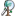

TerraMap Web is a cross-platform, interactive Terraria v1.4.5 world map viewer that loads quickly and lets you pan, zoom, find blocks, ores, items in chests, dungeons, NPCs, etc.
Try it now » View recent changes. »
TerraMap © Jason Coon 2015
Support TerraMap development:
View Source Code on GitHub